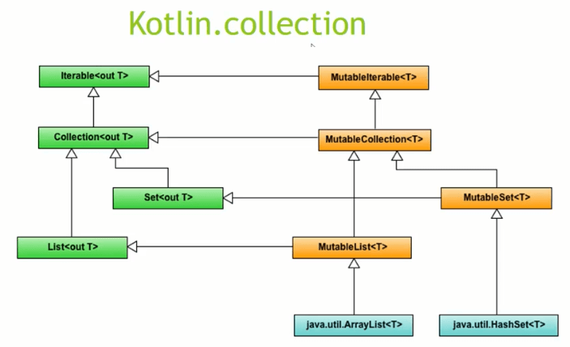

Коллекции представляют контейнеры, которые используются для хранения данных. В зависимости от типа коллекции различаются способы работы с данными.
Kotlin не имеет собственной библиотеки коллекций и полностью полагается на классы коллекций, которые предоставляет Java. В то же время эти коллекции в Kotlin расширяются дополнительными возможностями.
Так, в Kotlin коллекции разделяются на изменяемые (mutable) и неизменяемые (immutable) коллекции.
Mutable-коллекция может изменяться, в нее можно добавлять, в ней можно изменять, удалять элементы. Immutable-коллекция также поддерживает добавление, замену и удаление данных, однако в процессе подобных операций коллекция будет заново пересоздаваться.
Все коллекции в Kotlin располагаются в пакете kotlin.collections. Полный список интерфейсов и классов, которые представляют коллекции, можно найти здесь.
На вершине иерархии находится интерфейс Iterable, который определяет функцию итератор для перебора коллекции.
Основным интерфейсом, который позволяет работать с коллекциями, является kotlin.Collection. Данный интерфейс определяет функциональность для перебора элементов, проверки наличия элементов, чтения данных. Однако он не предоставляет возможности по добавлению и удалению данных. Его основные компоненты:
size: возвращает количество элементов в коллекции
isEmpty(): возвращает true, если коллекция пустая
contains(element): возвращает true, если коллекция содержит element
containsAll(collection): возвращает true, если коллекция содержит элементы коллекции collection
Этот интерфейс расширяется другими интерфейсами, которые представляют неизменяемые коллекции - List, который представляет обычный список, и Set, который представляет неупорядоченную коллекцию элементов, не допускающую дублирования элементов.
Особняком стоит интерфейс Map. Он не расширяет Collection и представляет набор пар ключ-значение, где каждому ключу сопоставляет некоторое значение. Все ключи в коллекции являются уникальными.
Все изменяемые коллекции реализуют интерфейс MutableIterable. Он представляет функцию итератора для перебора коллекции.
Для изменения данных в Kotlin также определен интерфейс kotlin.MutableCollection, который расширяет интерфейс
kotlin.Collection и предоставляет методы для удаления и добавления элементов. В частности:
add(element): добавляет элемент
remove(element): удаляет элемент
addAll(elements): добавляет набор элементов
removeAll(elements): удаляет набор элементов
clear(): удаляет все элементы из коллекции
Этот интерфейс расширяется интерфейсами MutableList, который представляет изменяемый список, и MutableSet, который предствляет изменяемую неупорядоченную коллекцию уникальных элементов.
И еще одна изменяемая коллекция представлена интерфейсом MutableMap - изменяемая карта, где каждый элемент представляет пару ключ-значение.
Кроме выше рассмотренных методов интерфейс Iterable также предоставляет ряд функций для выполнения различных операций над коллекциями. Рассмотрим основные операции:
all(predicate: (T) -> Boolean): Boolean
возвращает true, если все элементы соответствуют предикату, который передается в функцию в качестве параметра
any(): Boolean
возвращает true, если коллекция содержит хотя бы один элемент
Дополнительная версия возвращает true, если хотя бы один элемент соответствуют предикату, который передается в функцию в качестве параметра
any(predicate: (T) -> Boolean): Boolean
asSequence(): Sequence<T>
создает из коллекции последовательность
average(): Double
возвращает среднее значение для числовой коллекции типов Byte, Int, Short, Long, Float, Double
chunked(size: Int): List<List<T>>
расщепляет коллекцию на список, который состоит из объектов List, параметр size устанавливает максимальное количество элементов в каждом из списков
Дополнительная версия в качестве второго параметра получает функцию преобразования, которая преобразует каждый список в элемент новой коллекции
chunked(size: Int,transform: (List<T>) -> R): List<R>
contains(element: T): Boolean
возвращает true, если коллекция содержит элемент element
count(): Int
возвращает количество элементов в коллекции
Дополнительная версия возвращает количество элементов, которые соответствуют предикату
count(predicate: (T) -> Boolean): Int
distinct(): List<T>
возвращает новую коллекцию, которая содержит только уникальные элементы
distinctBy(selector: (T) -> K): List<T>
возвращает новую коллекцию, которая содержит только уникальные элементы с учетом функции селектора, которая передается в качестве параметра
drop(n: Int): List<T>
возвращает новую коллекцию, которая содержит все элементы за исключением первых n элементов
dropWhile(predicate: (T) -> Boolean): List<T>
возвращает новую коллекцию, которая содержит все элементы за исключением первых элементов, которые соответствуют предикату
elementAt(index: Int): T
возвращает элемент по индексу index. Если индекс выходит за пределы коллекции, то генерируется исключение типа IndexOutOfBoundsException
elementAtOrElse(index: Int, defaultValue: (Int) -> T): T
возвращает элемент по индексу index. Если индекс выходит за пределы коллекции, то возвращается значение, устанавливаемое функцией из параметра defaultValue
elementAtOrNull(index: Int): T?
возвращает элемент по индексу index. Если индекс выходит за пределы коллекции, то возвращается null
filter(predicate: (T) -> Boolean): List<T>
возвращает новую коллекцию из элементов, которые соответствуют предикату
filterNot(predicate: (T) -> Boolean): List<T>
возвращает новую коллекцию из элементов, которые НЕ соответствуют предикату
filterNotNull(): List<T>
возвращает новую коллекцию из элементов, которые не равны null
find(predicate: (T) -> Boolean): T?
возвращает первый элемент, который соответствует предикату. Если элемент не найден, то возвращается null
findLast(predicate: (T) -> Boolean): T?
возвращает последний элемент, который соответствует предикату. Если элемент не найден, то возвращается null
first(): T
возвращает первый элемент коллекции
Дополнительная версия возвращает первый элемент, которые соответствует предикату
first(predicate: (T) -> Boolean): T
Если элемент не найден, то генерируется исключение типа NoSuchElementException
firstOrNull(): T?
возвращает первый элемент коллекции
Дополнительная версия возвращает первый элемент, которые соответствует предикату
firstOrNull(predicate: (T) -> Boolean): T?
Если элемент не найден, то возвращается null
flatMap(transform: (T) -> List<R>): List<R>
преобразует коллекцию элементов типа T в коллекцию элементов типа R, используя функцию преобразования, которая передается в качестве параметра
fold(initial: R, operation: (acc: R, T) -> R): R
Возвращает значение, которое является результатом действия функции operation над каждым элементом коллекции. Первый параметр функции operation - результат работы функции над предыдущим элементом коллекции (при первом вызове - значение из параметра initial), в второй параметр - текущий элемент коллекции.
forEach(action: (T) -> Unit)
Выполняет для каждого элемента коллекции действие action.
groupBy(keySelector: (T) -> K): Map<K, List<T>>
Группирует элементы по ключу, который возвращается функцией keySelector. Результат функции карта Map, где ключ - собственно ключ элементов, а значение - список List из элементов, которые соответствуют этому ключу
Дополнительная версия принимает функцию преобразования элементов:
groupBy(keySelector: (T) -> K, valueTransform: (T) -> V): Map<K, List<V>>
indexOf(element: T): Int
Возвращает индекс первого вхождения элемента element. Если элемент не найден, возвращается -1
indexOfFirst(predicate: (T) -> Boolean): Int
Возвращает индекс первого элемента, который соответствует предикату. Если элемент не найден, возвращается -1
indexOfLast(predicate: (T) -> Boolean): Int
Возвращает индекс последнего элемента, который соответствует предикату. Если элемент не найден, возвращается -1
intersect(other: Iterable
Возвращает все элементы текущей коллекции, которые есть в коллекции other
joinToString(): String
Генерирует из коллекции строку
last(): T
возвращает последний элемент коллекции
Дополнительная версия возвращает последний элемент, которые соответствует предикату
last(predicate: (T) -> Boolean): T
Если элемент не найден, то генерируется исключение типа NoSuchElementException
lastOrNull(): T?
возвращает последний элемент коллекции
Дополнительная версия возвращает последний элемент, которые соответствует предикату
lastOrNull(predicate: (T) -> Boolean): T?
Если элемент не найден, то возвращается null
lastIndexOf(element: T): Int
Возвращает последний индекс элемента element. Если элемент не найден, возвращается -1
map(transform: (T) -> R): List<R>
Применяет к элементам коллекции функцию трансформации и возвращает новую коллекцию из новых элементов
mapIndexed(transform: (index: Int, T) -> R): List<R>
Применяет к элементам коллекции и их индексам функцию трансформации и возвращает новую коллекцию из новых элементов
mapNotNull(transform: (T) -> R?): List<R>
Применяет к элементам коллекции функцию трансформации и возвращает новую коллекцию из новых элементов, которые не равны null
maxOf(selector: (T) -> Double): Double
Возвращает максимальное значение на основе селектора
maxOfOrNull(selector: (T) -> Double): Double?
Возвращает максимальное значение на основе селектора. Если коллекцию пуста, возвращается null
maxOrNull(): Double?
Возвращает максимальное значение. Если коллекцию пуста, возвращается null
minOf(selector: (T) -> Double): Double
Возвращает минимальное значение на основе селектора
minOfOrNull(selector: (T) -> Double): Double?
Возвращает минимальное значение на основе селектора. Если коллекцию пуста, возвращается null
minOrNull(): Double?
Возвращает минимальное значение. Если коллекцию пуста, возвращается null
minus(element: T): List<T>
Возвращает новую коллекцию, которая содержит все элементы текущей за исключением элемента element.
Имеет разновидности, которую позволяют исключить из коллекции наборы элементов:
1 2 3 | minus(elements: Array<T>): List<T>minus(elements: Iterable<T>): List<T>minus(elements: Sequence<T>): List<T> |
plus(element: T): List<T>
Возвращает новую коллекцию, которая содержит все элементы текущей за исключением плюс элемент element.
Имеет разновидности, которую позволяют включить в коллекцию наборы элементов:
1 2 3 | plus(elements: Array<T>): List<T>plus(elements: Iterable<T>): List<T>plus(elements: Sequence<T>): List<T> |
reduce(operation: (acc: S, T) -> S): S
Возвращает значение, которое является результатом действия функции operation над каждым элементом коллекции. Первый параметр функции operation - результат работы функции над предыдущим элементом коллекции, в второй параметр - текущий элемент коллекции.
shuffled(): List<T>
Условно перемешивает коллекцию
sorted(): List<T>
Сортирует коллекцию по возрастанию
sortedBy(selector: (T) -> R?): List<T>
Сортирует коллекцию по возрастанию на основе селектора
sortedByDescending(selector: (T) -> R?): List<T>
Сортирует коллекцию по убыванию на основе функции-селектора
sortedDescending(): List<T>
Сортирует коллекцию по убыванию
sum(): Int
Возвращает сумму элементов коллекции.
subtract(other: Iterable
Возвращает набор элементов, которые есть в текущей коллекции и отсутствуют в коллекции other.
sum(): Int
Возвращает сумму элементов коллекции
sumOf(selector: (T) -> Int): Int
Возвращает сумму элементов коллекции на основе функции-селектора
take(n: Int): List<T>
Возвращает новую коллекцию, которая содержит n первых элементов текущей коллекции
takeWhile(predicate: (T) -> Boolean): List<T>
Возвращает новую коллекцию, которая содержит n первых элементов текущей коллекции, соответствующих функции-предикату
toHashSet(): HashSet<T>
Создает из коллекции объект HashSet
toList(): List<T>
Создает из коллекции объект List
toMap(): Map<K, V>
Создает из коллекции объект Map
toSet(): Set<T>
Создает из коллекции объект Set
union(other: Iterable
Возвращает набор уникальных элементов, которые есть в текущей коллекции и коллекции other